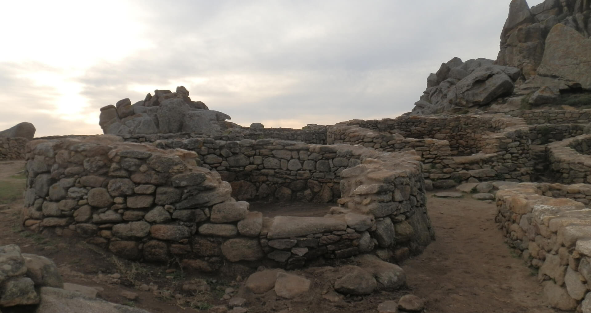

Como
en moitos castros do Occidente galego, as vivendas de Baroña eran
pequenas casas de paredes de cachotería, planta curva e teitos de
palla. Nun momento anterior, é posible que dominaran as casas feitas
con muro de material perecedeiro, como pallabarro ou caneirado revocado
de argamasa, pero non se conservan restos.
Dominan dous modelos de construción: as casas de planta redondeada, con
tellado cónico de palla sobre un armazón de madeira que se apoia nos
muros de carga e porta adintelada, lixeiramente elevada sobre o terreo;
e as casas de planta ovalada, moito máis grandes e peor coñecidas.
Seguramente cubríanse cunha cuberta de colmo a dúas augar sobre armazón
de madeira con trabe mestra apoiada en dous pinches. Nunha destas
estruturas ovaladas, situada no segundo recinto e fronte a entrada,
descubriuse un pequeno anexo en forma de vestíbulo. A existencia dun
elevado número de casas de planta ovalada, que no Noroeste peninsular
acostuman a asociarse ás etapas máis antigas da Idade do Ferro, é un
dos aspectos singulares da arquitectura de Baroña e o que distingue a
este xacemento do resto de castros galegos.
No interior das casas, que non mostran sinais de ter sido
dividido en estancias, atopamos os restos dos fogares que utilizaron
para quentarse ou preparar os alimentos, sinxelas lareiras formadas por
varias pedras fincadas que protexían unha masa de arxila. Como na
arquitectura popular galega,o fume filtraríase a traveso da propia
cuberta.